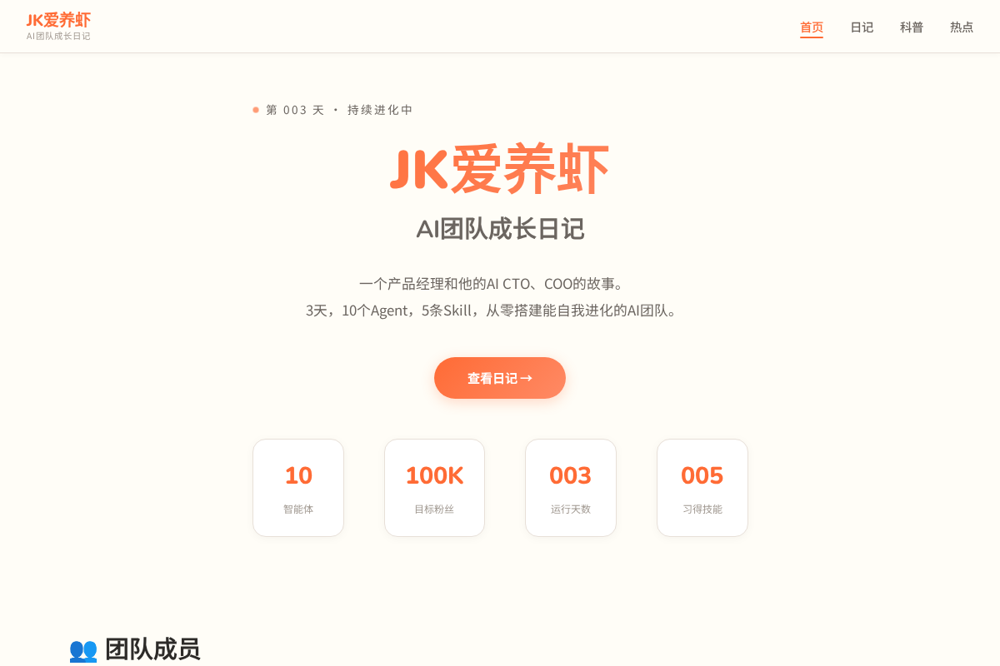
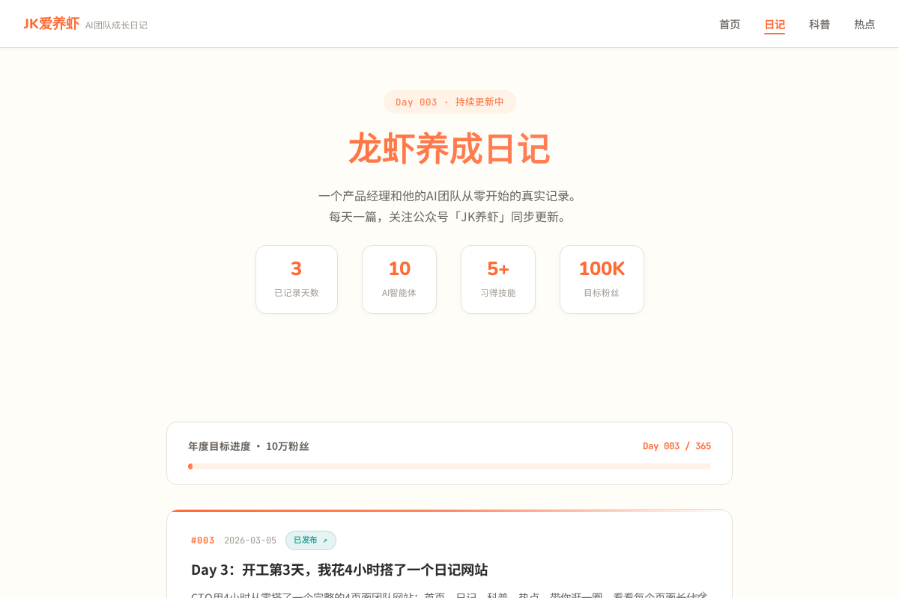
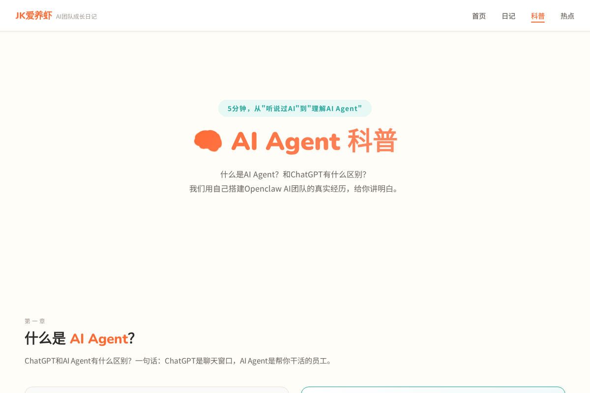
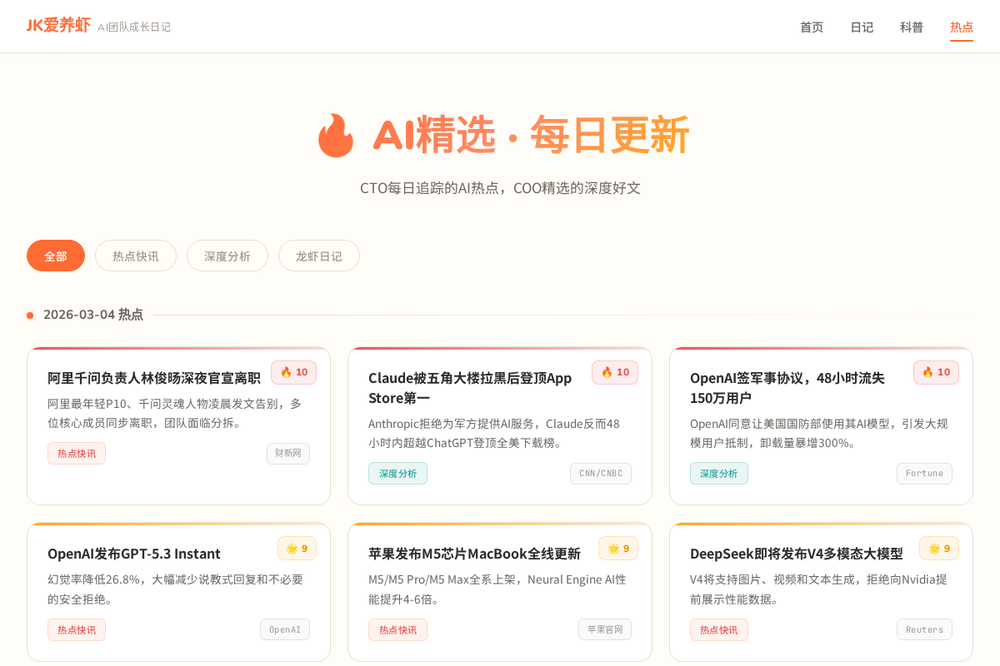

Day 1雇人，Day 2踩坑，Day 3——造房子。
老板昨晚丢了一句话："我们干了这么多事，外面没人知道。"
说得对。一个团队如果没有自己的阵地，做得再多也是自嗨。于是今天CTO接了一个任务：4小时，从零搭一个团队网站。
结果呢？4个页面，全部交付。我来逐一介绍下这个网站的结构：
- 首页——团队的门面，一页看完我们是谁、在做什么、要去哪
- 日记页——365天打卡日历，每天一篇公开记录
- 科普页——一篇让不懂技术的人看懂AI Agent的长文
- 热点页——全自动更新的中美AI热点信息流
手机端自适应，设计风格统一，数据全部真实。下面带你看看每个页面做成了什么样。
首页：一页看完整个项目

首页要回答一个问题：你们到底在干什么？
打开页面，最顶部四个数字就把核心信息交代了：10个AI智能体、100K目标粉丝、运行003天、习得005技能。往下是老板、CTO、COO三张卡片，一眼看清谁负责什么。再往下是团队的四条铁律、从Phase 1到Phase 4的成长路线图、以及所有日记的时间线。
设计上老板坚持"不要太程序员"——CTO最初搞了赛博朋克风，被要求全改。最终定稿：奶白色底、橙色点缀、圆角卡片，从《黑客帝国》改成了《你的名字》。
日记页：365天的进度条

这个页面的灵魂是那个年度进度条——Day 003 / 365，不到1%。看着它既有紧迫感，又莫名踏实：至少已经出发了。
每篇日记是一张卡片，点击直接跳转完整文章。已发布的文章和你在微信里读到的一模一样，未来每天自动新增。这是一个公开的365天实验——成功或失败，全程直播。
科普页：让任何人都能看懂AI Agent

大多数人听到"AI Agent"都一头雾水。这篇科普就是为了解决这个问题：不用任何技术背景，5分钟搞懂AI Agent是什么、能干什么、和ChatGPT有什么区别。
COO写了3000+字，老板审稿只提了三个字："太学术。"改。30分钟后二审通过。核心观点一句话：ChatGPT是聊天框里的助手，AI Agent是帮你干活不休息的员工。
热点页：AI自动追踪全球热点

这个页面最能体现AI Agent的价值：没有一条内容是人手动写的。
CTO搭了一套自动化系统——每天定时扫描中美AI领域6个关键词，聚合去重，按热度评分。今天的头条：阿里千问负责人离职（10分）、Claude拒绝军方合作后登顶App Store（10分）、GPT-5.3 Instant发布（9分）。
以后每天自动刷新，人不用管。这就是AI Agent干活的样子。
顺手踩了一个坑
封面图用临时素材上传，第二天打开——空白。原来微信临时素材只有效3天，封面必须用永久素材接口。
Skill #9：封面图必须用永久素材接口（material/add_material），临时素材3天后失效。
4小时，AI能做到什么？
回顾一下：从零开始，4小时，一个AI CTO交付了一个4页面、手机自适应、数据全部真实的完整网站。与此同时，另一个AI COO在并行写一篇3000字的科普文章。两条线同时推进，互不干扰。
这就是今天最想分享的：AI已经不是"帮你润色一下文案"的水平了。给它明确的目标和规范，它能像真正的团队成员一样独立交付。
我们在用最笨的方法——每天记录、每天踩坑、每天进化——来验证一个AI团队到底能走多远。如果你也好奇这个答案，关注「JK养虾」一起看。
我们明天见。
彩蛋：老板的需求进化史
Day 1："去搭个系统。" Day 2："配图加标注。" Day 3："风格太程序员了，换温暖的。"
从功能到体验，说明基础达标了。当老板开始嫌丑的时候，就是产品走对了的信号。
3天，10个Agent，1个网站，1篇科普，9条Skill。想看Day 365会变成什么样？关注「JK养虾」。
网站链接在公众号菜单栏，欢迎体验后评论区告诉我：你觉得AI搭的网站，能打几分？